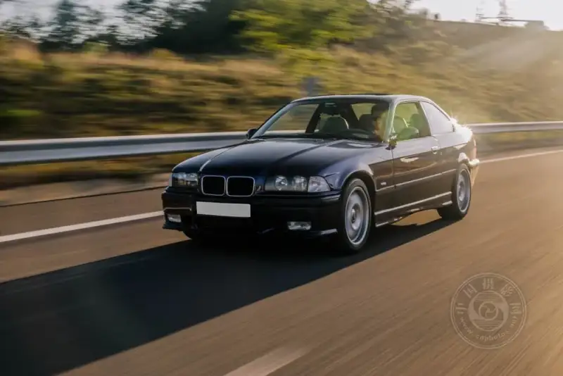
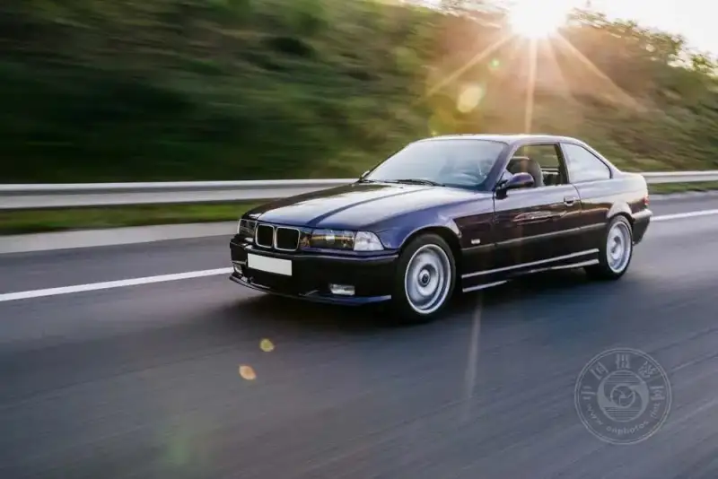
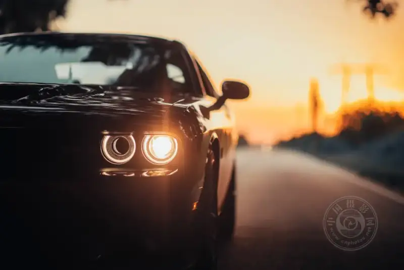

Car photography is an art, and the result depends on the subject and on how the light shapes shadow and brightness. If you do not understand how to use light to show the angles, curves, and details of a car body, you cannot capture the vehicle well as a subject.
Picture shooting a vintage Mustang at golden hour, the sunset stretching long shadows while tracing every curve. This image shows how skillfully handling light can lift an ordinary snapshot into a work of art.
For example, when you search for guides and tips on selling a classic or a modern car, you will see that high-quality photos play a major role. A great photo focuses on the details of the car and also conveys a lot about the vehicle and what it is used for.
This article helps you learn the common techniques for handling light and shadow in car photography, so your work can rise to the next level.

1. Understand light in photography
Light is one of the most basic elements of photography, and good light is essential when you shoot a car. Light can lift an ordinary car photo into art and let people appreciate the shape and detail of the body. The main light sources include:
1. Natural light
Shooting with natural light during the golden hour, shortly after sunrise or just before sunset, traces the outline and lines of a car well. Choose this time of day to bring out the fine features and reflective parts of the vehicle.
2. Artificial light
Artificial sources such as LED panels and studio lights give you more control over the light, though they are not as natural as sunlight. With artificial light, the photographer controls the direction of the light and knows how to place it to light specific areas of the car, or to boost contrast and layers.
3. Reflectors and diffusers
A reflector bounces light from a natural or artificial source back onto the car, to balance the exposure in the shadowed areas. It also cuts the glare caused by light reflecting off surfaces, and keeps the overall lighting even and full.

2. The role of shadow in photography
In car photography, shadow plays a vital role. It adds depth and dimension to the frame, and sometimes adds drama. Shadow can emphasize the curves of the car, bring out the texture of the body surface, and create a specific mood.
1. Create a dramatic effect
Used well, shadow turns an ordinary car photo into a striking image. When shadows fall at an angle across the hood and fenders, the pattern of light and dark across the body deepens the design and adds dimension to the car. This technique strengthens the curves and lines that give the car its look.
2. Balance shadow and highlight
The contrast between shadow and highlight must be just right. With too much shadow, some detail in the frame is hidden and hard to see. With almost no shadow, the image looks flat and dull. Use reflectors and fill lights to keep the dramatic mood while catching the car's detail and softening the shadow.
3. Avoid harsh shadows
Shadow adds interest, but a very strong cast shadow can have a negative effect, especially in car photography. Accessories such as diffusers and softboxes help soften the light and avoid sharp shadows and uneven lighting. This is especially useful when you shoot reflective surfaces, because they easily show the flaws caused by harsh, unwanted shadows.

3. Tips for the perfect shot
Taking a great car photo is far more than raising the camera and pressing the shutter. It combines technical skill with personal creativity.
These four key tips will help you raise the quality of your car photography:
1. Position the car and choose your angle
When you shoot, the camera position and angle are crucial, because they directly affect the final image. A low angle makes the car look stronger and bulkier, while a high angle gives a different view of the vehicle. Place the car to highlight its most important features, and keep the background from distracting from them.
2. Use the background and the setting
A well-chosen background adds a lot to the look of the car. Natural scenery, a city street, asphalt, or a beautiful rural setting all give your photo mood and context. Even with a creative background, make sure it does not steal the show or pull attention from the car. Sometimes a simple, plain background is the most effective way to highlight the car itself.
3. Refine the composition
Composition always matters in any photo. Using the rule of thirds to place the car slightly off center makes the photo look more lively and interesting. Leading lines, such as road markings or certain structures, help draw the viewer's eye to the car. Reflections also work well, especially when you show the appeal of the front or rear of the car.
4. Post-process to enhance
Post-processing can further improve and refine your photo. You can adjust basic settings such as brightness, contrast, and color balance to bring out parts of the car. Software can also fix flaws or reflection problems. Through contrast adjustment, adding a vignette, and local sharpening, you can strengthen the features you want to highlight.
Conclusion
Car photography is far more than pressing the shutter. It is about catching the right balance and interplay of light and shadow, to show the personality of the car in the best and most detailed way.
Once you understand light, refine your composition, and use post-processing well, you can turn ordinary car photos into compelling work. Whether you are a professional or a hobbyist, these tips will guide you as you capture the beauty of cars.